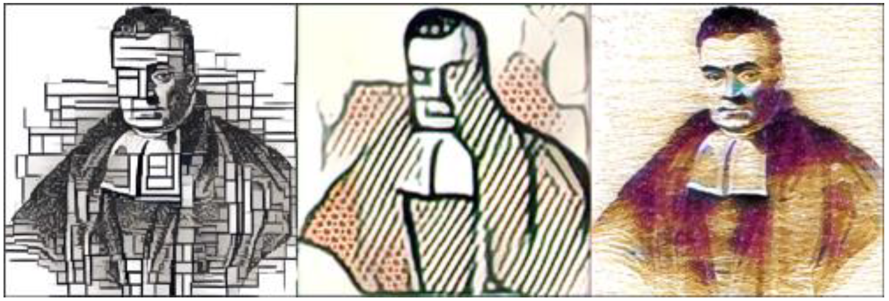

BayesCog
Bayesian Statistics and Hierarchical Bayesian Modeling for Psychological Science



Welcome
This website12 is an adapted version of teaching materials originally made for the award winning* BayesCog seminar at the Faculty of Psychology, University of Vienna, as part of the Advanced Seminar for master’s students (Mind and Brain track; recorded during Summer Term 2020/2021). Further content from the BayesCog workshop at UKE Hamburg (2023) have also been added.
Recording: Recordings from the original version of the course are available on YouTube (also see below). The most recent recording from the 2021 summer semester is also available on YouTube.
Outreach: Twitter thread (being liked 700+ times on Twitter) summarizing the contents of the course.
Award/Recognition: The original course received a commendation award from the Society for the Improvement of Psychological Science (SIPS) (also see a tweet), as well as an ECR Teaching Award from the Faculty of Psychology, University of Vienna.
Course summary
Computational modeling and mathematical modeling provide an insightful quantitative framework that allows researchers to inspect latent processes and to understand hidden mechanisms. Hence, computational modeling has gained increasing attention in many areas of cognitive science through cognitive modeling in recent years. One illustration of this trend is the growing popularity of Bayesian approaches to cognitive modeling. This course teaches the theoretical and practical knowledge necessary to perform, evaluate and interpret Bayesian modeling analyses, with a specific emphasis towards modeling latent cognitive processes.
In the course, students will be formally grounded in key principles of cognitive modeling including Bayesian statistics and reinforcement learning. We will use R/RStudio and a newly developed statistical computing language - Stan - to perform Bayesian analyses, ranging from simple binomial models and linear regression models to more complex hierarchical reinforcement learning (RL) models. We will also learn how to implement several key validation measures including model comparison, model recovery and posterior predictive checks.
Contributors
Lei Zhang
Dr. Lei Zhang is Principal Investigator of the Adaptive Learning Psychology and Neuroscience Lab, ALP(e)N Lab, and Associate Professor at the School of Psychology, University of Birmingham. Lei obtained his BSc in Psychology from Beijing Normal University, China, his MSc in Cognitive Neuroscience at the Basque Center on Cognition, Brain and Language, Spain and his PhD (summa cum laude), along with a one-year transition postdoc, with Jan Gläscher at the Institute of Systems Neuroscience, University Medical Center Hamburg-Eppendorf, Germany. He was then a Roche intern for Scientific Exchange (RiSE) at F. Hoffmann-La Roche AG, and worked as a postdoctoral fellow with Claus Lamm at the Social Cognitive and Affective Neuroscience Unit (SCAN-Unit), University of Vienna, Austria. Lei joined the Centre for Human Brain Health, Institute of Mental Health, and School of Psychology at the University of Birmingham as an Associate Professor in 2022. His research applies knowledge from cognitive neuroscience, psychology, and computational modeling to gain a comprehensive understanding of how the brain computes values and social information when making decisions, and how they are affected in mental health disorders. He is also motivated towards fostering open and collaborative science, being a founding member of the grassroots China Open Science Network (COSN) and is the recipient of multiple awards including the BNA Individual Researcher Credibility Prize in 2024.

Aamir Sohail
Aamir Sohail is an MRC Advanced Interdisciplinary Methods (AIM) DTP PhD student based at the Centre for Human Brain Health (CHBH), University of Birmingham, where he is supervised by Lei Zhang and Patricia Lockwood. He completed a BSc in Biomedical Science at Imperial College London, followed by an MSc in Brain Imaging at the University of Nottingham. He then worked as a Junior Research Fellow at the Centre for Integrative Neuroscience and Neurodynamics (CINN), University of Reading with Anastasia Christakou. His research interests involve using a combination of behavioural tasks, computational modeling and neuroimaging to understand social decision-making, and using this knowledge to inform the precision-based treatment of mental health disorders. Outside of research, he is also passionate about facilitating inclusivity and diversity in academia, as well as promoting open and reproducible science.
License
This course is licensed under a Creative Commons Attribution-ShareAlike 4.0 International License.
You are free to share, copy, and redistribute the material in any medium or format. Additionally, you can adapt, remix, transform, and build upon the material for any purpose, including commercial use. However, you must provide appropriate attribution, including credit to the original source, a link to the license, and an indication if changes were made. Furthermore, if you remix, transform, or build upon the material, you are required to distribute your contributions under the same license as the original.

Citing
If you use materials from this course in your work or research, please cite it as:
Zhang, L., & Sohail, A. (2025). BayesCog: Bayesian Statistics and Hierarchical Bayesian Modeling for Psychological Science [Online course]. Zenodo. https://doi.org/[DOI_HERE]
For BibTeX users:
@online{zhang_sohail_2025,
title = {BayesCog: Bayesian Statistics and Hierarchical Bayesian Modeling for Psychological Science},
author = {Zhang, Lei and Sohail, Aamir},
year = {2025},
publisher = {Zenodo},
doi = {DOI_HERE},
url = {ZENODO_URL},
note = {Online course},
repository = {https://github.com/REPOSITORY_URL}
}Note: Once this course is published on Zenodo, this citation information will be updated with the corresponding DOI and URL.
Contact
For bug reports, issues or comments, please contact Lei Zhang, or Aamir Sohail, or open a thread on the GitHub repository.
Footnotes
L.Z. created the original resources, including scripts, data, slides, recordings and GitHub repositories. A.S. created the website, and added the content by converting, editing and expanding the source material. Both L.Z. and A.S. further revised and edited the website.↩︎
Bayes’ photo credit: Burrsettles (2016). The three faces of Bayes. Slackprop. https://slackprop.wordpress.com/2016/08/28/the-three-faces-of-bayes↩︎